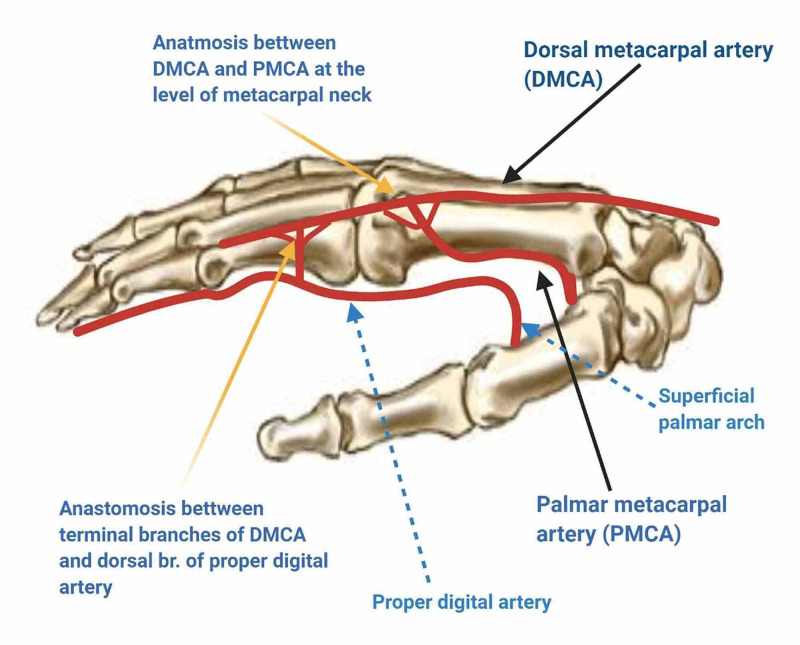

手の甲（手背）から指の背側の皮膚欠損を覆う「逆行性背側中手動脈皮弁（ぎゃっこうせいはいそくちゅうしゅどうみゃくひべん）」を報告した論文です。血管を切ってつなぎ直す顕微鏡手術（遊離皮弁）を使わずに、有茎（血管の茎でつながったまま）で手背の皮膚を指へ運べる点が特徴で、手の再建で広く用いられる遠位茎皮弁（指側に茎を置く皮弁）の礎（いしずえ）のひとつとされます。
背景 ― 指背の小さな欠損をどう覆うか
指の背側（指背）や指の関節部（指節）に、腱や骨が露出するような小さな軟部組織（皮膚や皮下組織）の欠損が生じると、単純に縫い縮めたり、皮膚だけを移植（植皮）したりするだけでは覆えないことがあります。腱や骨の上には血流の乏しい面が露出するため、血流を持った皮膚（皮弁）で覆う必要があるとされます。
従来こうした部位には、遊離皮弁（皮膚を血管ごと切り離し、顕微鏡下で別の血管に縫い直す皮弁）や、遠く離れた部位からの皮弁が用いられることがありました。しかしこれらは手術が大がかりで、顕微鏡手術の設備や技術を要します。手のすぐ近くにある手背の皮膚を、簡便に指へ運ぶ方法が求められていました。
この論文がしたこと
著者は、手背の皮膚を養う血管である背側中手動脈（はいそくちゅうしゅどうみゃく＝手の甲を指のあいだへ走る細い動脈）を利用し、その血流の向きを逆にして使う新しい皮弁を報告しました。
具体的には、背側中手動脈を近位（体の中心に近い側＝手首寄り）で結紮（けっさつ＝糸で縛って血流を止める）し、指の付け根近くにある交通枝（別の血管とつながる細い枝）から流れ込む「逆行性（末梢＝指側へ向かう向き）」の血流でこの皮弁を栄養する、という発想です。血流の入り口を指側に置けるため、皮弁の回転の支点（茎＝けい、皮弁がつながったまま回転する軸）を遠位（指側）に設定でき、有茎のまま手背の皮膚を指背や指節の欠損へ運べるとしています。
解剖と血行の要点
この皮弁の血行の基盤は、手背の皮膚を養う筋膜血管網（きんまくけっかんもう＝fascial plexus、筋膜の層に張りめぐらされた細い血管のネットワーク）にあるとされます。背側中手動脈はこの血管網に連なっており、動脈の本幹（メインの幹）を近位で切っても、指側の交通枝から逆向きに血液が回り込むことで皮弁が生き残ると説明されています。
こうして血流の入り口（茎）を遠位＝指側に置けるため、皮弁を指先の方向へ回して欠損を覆えるのが特徴です。遊離皮弁のように血管を切って縫い直す必要がなく、顕微鏡手術を用いずに手の再建ができる点が実用上の利点とされます。

結果
著者はこの逆行性背側中手動脈皮弁を8皮弁（8例）に用い、手の小さな軟部組織欠損の被覆に有効であったと報告しました。原著では、この皮弁が信頼できる血管の裏づけを持つことを示したとされています。
少数例ながら、手背の皮膚を有茎で指へ運ぶという概念が実際に成立することを示した報告と位置づけられます。
意義 ― なぜ礎（いしずえ）なのか
同じ1990年に、Quaba と Davison が穿通枝型（せんつうしがた＝皮膚へ直接立ち上がる細い枝1本で皮弁を挙げる方式、いわゆる DMAP 皮弁）を報告しました。丸山（Maruyama）型と Quaba 型は、いずれも逆行性・遠位茎（指側に茎を置く）の背側中手動脈皮弁の礎となったとされています。
両者の違いは血流を得る仕組みにあります。丸山型は背側中手動脈の本幹そのものを逆行血流で使うのに対し、Quaba 型は本幹を切らず、皮膚へ立ち上がる直達の穿通枝1本で皮弁を挙げる点が異なると整理されます。
これらの皮弁は、その後の手の再建で広く用いられる遠位茎皮弁の考え方の出発点のひとつとなり、簡便で信頼性の高い手背皮弁として臨床に定着していったとされます。
この論文の要点
- 背側中手動脈を近位で結紮し、指側の交通枝からの逆行性（末梢向き）血流で栄養する島状皮弁を報告した。
- 皮弁の茎（回転の支点）を遠位＝指側に置けるため、遊離皮弁（顕微鏡下に血管を縫い直す皮弁）を使わず有茎のまま手背の皮膚を指背・指節へ運べる。
- 血行の基盤は手背の皮膚を養う筋膜血管網（fascial plexus）にあるとされる。
- 8皮弁（8例）に用い、手の小さな軟部組織欠損の被覆に有効と示した。
- 同年のQuaba & Davison（穿通枝型・DMAP）とともに、逆行性・遠位茎の背側中手動脈皮弁の礎となった。
用語ミニ辞典
- 背側中手動脈
- 手の甲（手背）を指のあいだへ向かって走る細い動脈。手背の皮膚を養う血管のひとつ。
- 逆行性（血流）
- 血液が通常とは逆の向き（ここでは指側＝末梢へ向かう向き）に流れること。血流の入り口を指側に置ける利点につながる。
- 島状皮弁
- 周囲の皮膚から切り離し、血管の茎（幹）だけでつながった状態にした皮弁。茎を軸に自由に移動・回転できる。
- 有茎皮弁 / 遊離皮弁
- 有茎皮弁は血管の茎でつながったまま移す皮弁。遊離皮弁は血管ごと切り離し、顕微鏡下で別の血管に縫い直す皮弁。
- 筋膜血管網（fascial plexus）
- 筋膜（きんまく＝筋肉を包む膜）の層に張りめぐらされた細い血管のネットワーク。手背の皮膚の血流の基盤となる。
- 交通枝
- ある血管と別の血管をつなぐ細い枝。ここでは指の付け根近くで逆行性血流を皮弁へ供給する役割をもつ。
- 穿通枝（せんつうし）
- 深部の血管から筋膜などを貫いて皮膚へ立ち上がる枝。Quaba型（DMAP皮弁）はこの枝1本で皮弁を挙げる。
本ページは形成外科の学習・参照を目的とした編集部によるオリジナルの日本語解説で、原著（英語）の逐語訳・全文転載ではありません。正確な内容・数値・図は必ず上記リンク先の原著をご確認ください。
掲載している図は、原著の図ではありません。原著の図は出版社が著作権を持ち転載できないため、同じ術式・同じ解剖を扱った無料公開（オープンアクセス／CC BY）論文の図を、出典とライセンスを明記して引用しています。